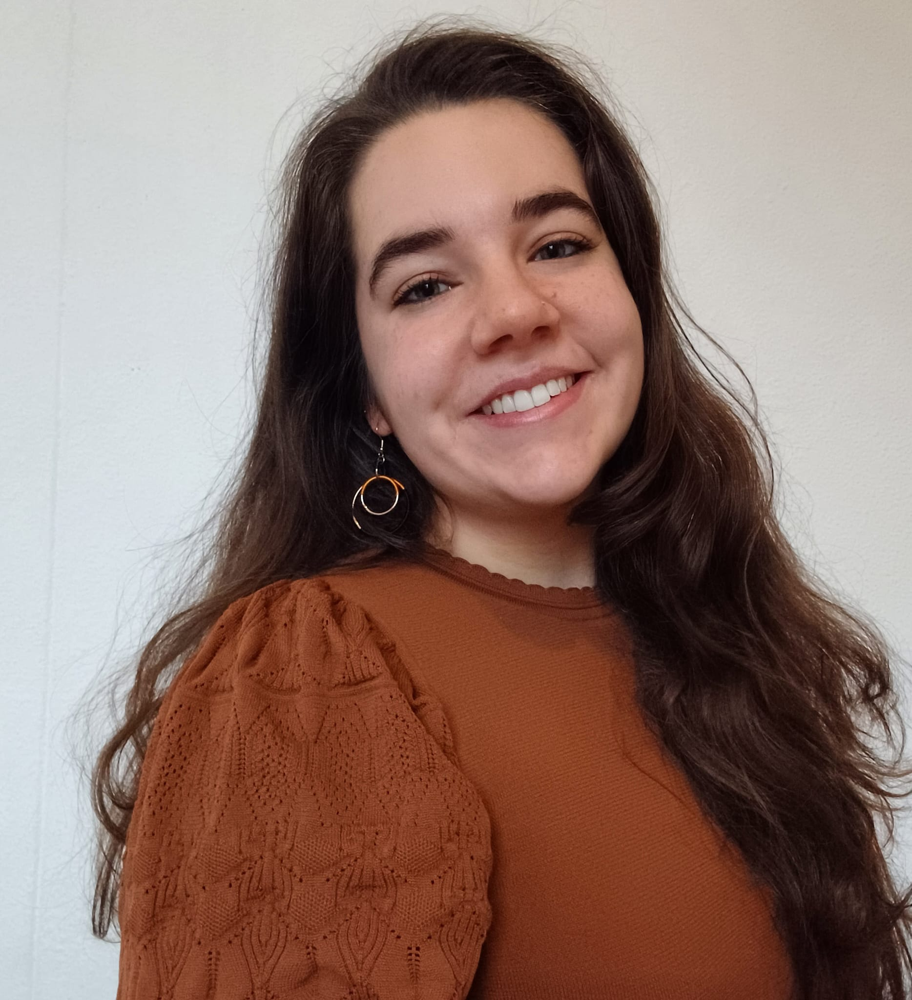

Hi, I'm Evelyne, a Doctoral Researcher in Social Neuroscience. In my PhD research, I use brainstimulation and brainrecording to investigate the neurocognitive mechanisms underlying moral decision-making in civilian and military populations.
Beyond my doctoral research, I am actively involved in science communication. Through #ResearchGoodsBads, I aim to show not only the successes of research, but also its challenges, insecurities, setbacks, and rejections.
I also enjoy bringing neuroscience to broader audiences through blogs, public engagement activities, and my science workshop The Cat That Makes the Brain Better.
#research Current Research Outreach Kids workshopI started my PhD in 2024 at Ghent University in the Moral & Social Brain Lab, under the supervision of Prof. Dr. Emilie A. Caspar.
My doctoral research investigates the neurocognitive mechanisms that support resistance to immoral orders. Using concurrent EEG-tDCS, I examine the causal relationship between prosocial disobedience and key neurocognitive processes, including empathy for pain and the sense of agency, in civilian and military populations.
My PhD is a collaboration between Ghent University and the Leibniz Research Centre for Working Environment and Human Factors (IfADo) in Dortmund, Germany. Additionally, I collaborate with the Royal Military Academy (Belgium) and the Faculty of Military Sciences (The Netherlands).
Temporal misalignment in scene perception: divergent representations of locomotive action affordances in human brain responses and DNNs. Cognitive Computational Neuroscience Proceedings (CCN-P). https://doi.org/10.32470/m4r6338
Differential contributions of body form, motion, and temporal information to subjective action understanding in naturalistic stimuli. Frontiers in Integrative Neuroscience, 18, 1302960. https://doi.org/10.3389/fnint.2024.1302960